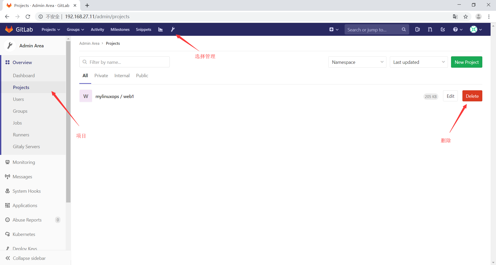
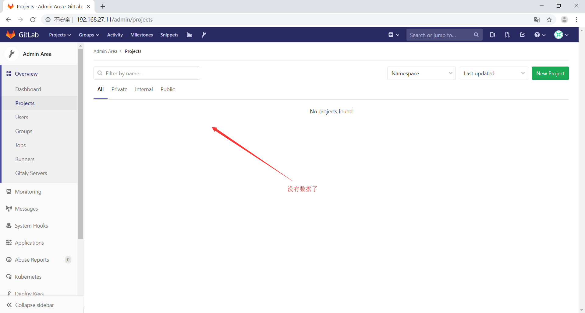
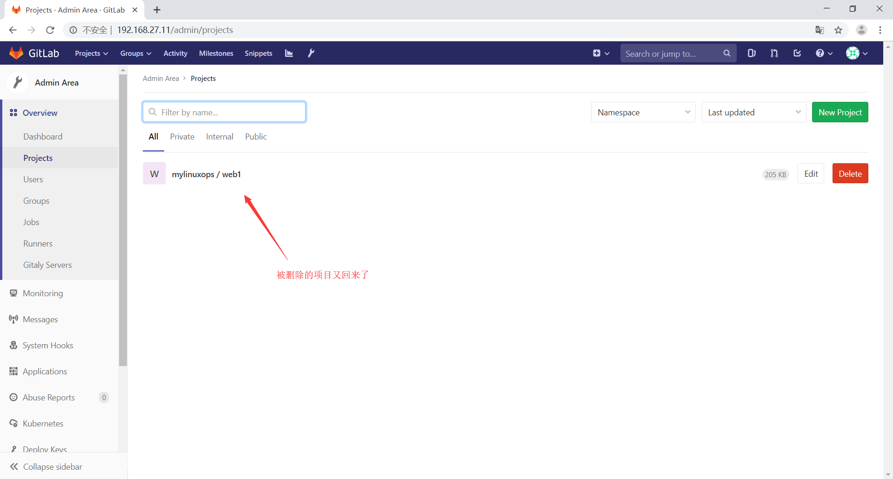

gitlab的数据目录在/var/opt/gitlab目录下
1
2
3
4
5
6
7
8
9
10
11
12
13
14
15
16
17
18
19
20
21
22
23
24
25
26
| root@duxy6:~
total 96
drwxr-xr-x 20 root root 4096 Jul 18 11:48 ./
drwxr-xr-x 3 root root 4096 Jul 18 11:46 ../
drwxr-x--- 3 gitlab-prometheus root 4096 Jul 18 11:48 alertmanager/
drwx------ 2 git root 4096 Jul 18 11:46 backups/
-rw------- 1 root root 38 Jul 18 11:48 bootstrapped
drwxr-xr-x 2 git git 4096 Jul 18 11:46 .bundle/
drwx------ 2 git root 4096 Jul 18 11:48 gitaly/
-rw-r--r-- 1 git git 286 Jul 18 11:46 .gitconfig
drwx------ 3 git root 4096 Jul 18 11:46 git-data/
drwxr-xr-x 3 git root 4096 Jul 18 11:46 gitlab-ci/
drwxr-xr-x 2 git root 4096 Jul 18 11:48 gitlab-monitor/
drwxr-xr-x 9 git root 4096 Jul 18 11:47 gitlab-rails/
drwx------ 2 git root 4096 Jul 18 11:46 gitlab-shell/
drwxr-x--- 2 git gitlab-www 4096 Jul 18 11:48 gitlab-workhorse/
drwx------ 3 root root 4096 Jul 18 13:58 logrotate/
drwxr-x--- 9 root gitlab-www 4096 Jul 18 11:47 nginx/
drwxr-xr-x 3 root root 4096 Jul 18 11:48 node-exporter/
drwx------ 2 gitlab-psql root 4096 Jul 18 11:48 postgres-exporter/
drwxr-xr-x 3 gitlab-psql root 4096 Jul 18 11:47 postgresql/
drwxr-x--- 4 gitlab-prometheus root 4096 Jul 18 11:48 prometheus/
-rw-r--r-- 1 root root 226 Jul 18 11:48 public_attributes.json
drwxr-x--- 2 gitlab-redis git 4096 Jul 19 00:57 redis/
drwx------ 2 git git 4096 Jul 18 13:20 .ssh/
-rw-r--r-- 1 root root 40 Jul 18 11:47 trusted-certs-directory-hash
|
开发提交的数据在以下目录
1
2
3
4
5
| root@duxy6:~
total 12
drwx------ 3 git root 4096 Jul 18 11:46 ./
drwxr-xr-x 20 root root 4096 Jul 18 11:48 ../
drwxrws--- 3 git root 4096 Jul 18 12:29 repositories/
|
gitlab的数据备份
gitlab数据备份需要使用gitlab-rake命令，在数据备份之前需要先停止unicorn和sidekiq这两个服务
数据备份
暂停服务
1
2
3
4
| root@duxy6:~
ok: down: unicorn: 0s, normally up
root@duxy6:~
ok: down: sidekiq: 1s, normally up
|
执行数据备份命令
备份完毕后会在gitlab的数据目录下的backups目录下生成一个打包文件
1
2
3
4
5
| root@duxy6:~
total 128
drwx------ 2 git root 4096 Jul 19 01:11 ./
drwxr-xr-x 20 root root 4096 Jul 18 11:48 ../
-rw------- 1 git git 122880 Jul 19 01:11 1563498718_2019_07_19_11.11.5_gitlab_backup.tar
|
备份完毕后启动服务
gitlab的数据恢复
先将gitlab上的数据进行删除


数据被误删除后，先停止unicorn和sidekiq服务
1
2
3
4
| root@duxy6:~
ok: down: unicorn: 0s, normally up
root@duxy6:~
ok: down: sidekiq: 0s, normally up
|
恢复时一般使用最近的时间的备份
1
2
3
4
5
6
7
8
|
root@duxy6:~
total 128
drwx------ 2 git root 4096 Jul 19 01:11 ./
drwxr-xr-x 20 root root 4096 Jul 18 11:48 ../
-rw------- 1 git git 122880 Jul 19 01:11 1563498718_2019_07_19_11.11.5_gitlab_backup.tar
root@duxy6:~
|
恢复完毕后再次启动服务
1
2
3
4
| root@duxy6:~
ok: run: unicorn: (pid 87294) 1s
root@duxy6:~
ok: run: sidekiq: (pid 87348) 1s
|
查看代码是否恢复
